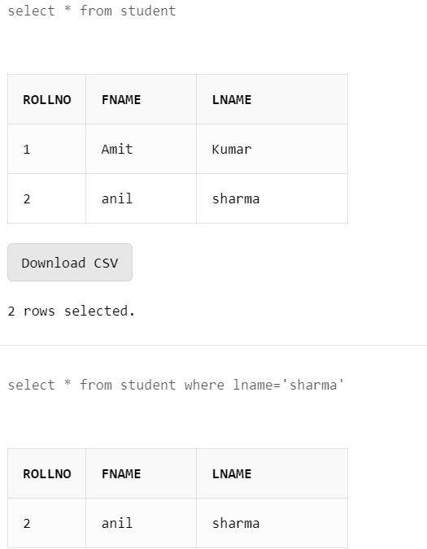

TConditional retrieval enables selective rows to be selected. Although selecting rows, restriction can be applied by a condition which governs the selection. Further clause called WHERE must be provided along with the SELECT statement to apply the condition to select a specific set of rows.The order of prior first goes to the WHERE clause and the records that match the condition are alone selected.
Select column name(s)
FROM table name(s)
WHERE condition(s) ;
